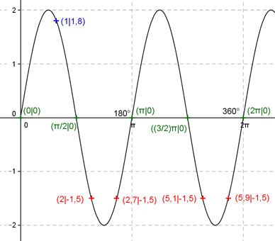

Aufgabe 176 Ergänzen Sie die Wertetabelle für x zwischen 0 und 2π: y = -2 sin(-2x) x 1 2 oder 2,7 oder 5,1 oder 5,9 y 1,8 -1,5 Amplitude = 2 ; Periode = 2π/2 = π Berechnung der Nullstellen: -2 sin(-2x) = 0 --> -2 sin(-2x) = -(-2)sin2x = 2 sin2x --> Substitution 2x = u --> 2 sin u = 0 --> u = k * π mit k = 0, 1, 2, ... --> Rücksubstitution liefert 2x = k * π |:2 --> x = k * π/2 x1 = 0 oder 0°, x2 = π/2 oder 90°, x3 = π oder 180°, x4 = (3/2)π oder 270° x5 = 2π oder 360°.  Funktionswert an einer Stelle x ermitteln: 1 * 180° x = 1 oder ---------- = 57,3° π f(1) = -2 sin(-2 * 1) = -2 sin(-2 * 57,3°) = 1,8 gerundet. Berechnung der x-Werte für y = f(x) = -1,5: f(x) = -1,5 eingesetzt, existiert zweimal zwischen π/2 und π bzw. 90° und 180° und zweimal zwischen (3/2)π und 2π bzw. 270° und 360° (siehe Graph). -2 sin(-2x) = -1,5 |:(-2) --> sin(-2x) = 0,75 --> -2x = arc sin 0,75 = = 0,85 |:(-2) x = -0,425 gerundet, liegt nicht im Bereich zwischen 0 und 2π --> 2 * 180° x1 = (π/2 + 0,425) = 2 oder ---------- = 114,6° π x2 = (π - 0,425) = 2,7 oder 154,7° x3 = ((3/2)π + 0,425) = 5,1 oder 292,2° x4 = (2π - 0,425) = 5,9 oder 338° gerundet.